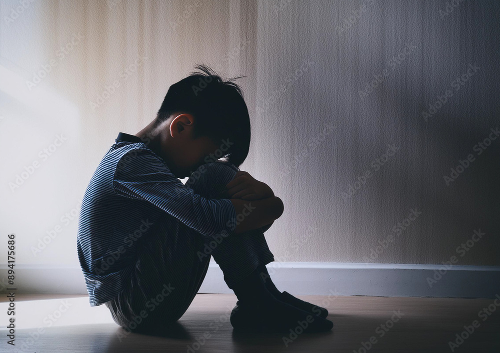
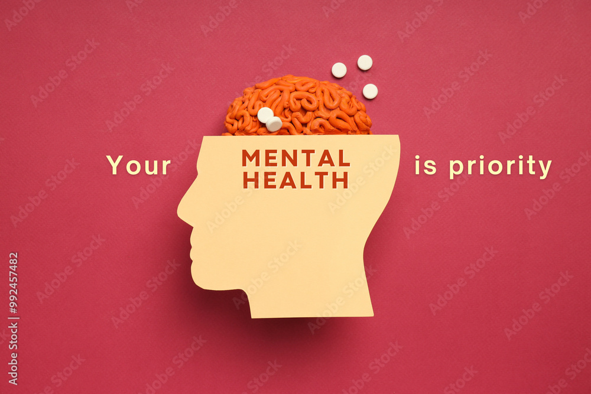
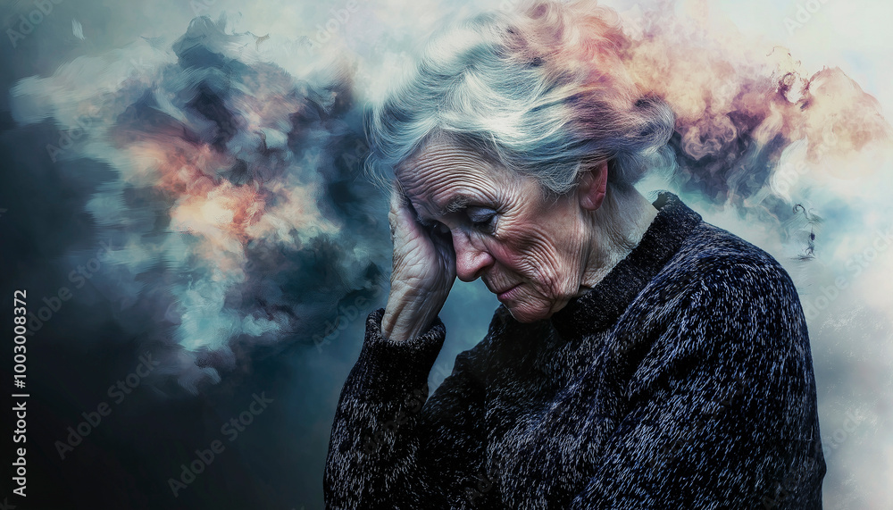

copyright: @Kingcolly-crypto
Mental illness can be treated! Speak out, don't let it finish you from the inside!!
Mental illness

What is mental illness?
Mental illness is a medical condition that can affect a person's thinking, emotions, and behaviors, and can make it difficult to function in social,
work, or family settings. It can affect anyone, regardless of age, gender, race, ethnicity, religion, or other factors.
Some examples of metal illness include:
- Anoidant personallity disorder: Characterized by low self-esteem and a fear of rejection,
people with this condition may avoid social situations. Psychotherapy and medication can help treat this condition.
- Major depression:A serious mental illness
- Schizphrenia:A serious mental illness
- Bipolar disorder:A serious mental illness
- Obsessive-compulsive disorder (OCD):A serious mental illness
- Panic disorder:A serious mental illness
- Posttraumatic stress disorder (PTSD):A serious mental illness
- Borderline personallity disorder:A serious mental illness

The causes of mental illness
Mental illness is caused by a set of complex combinations, either social, emotional, financial, biological etc:
- Genetics: A family's history of mental illness can increase the risks.
- Biological factors: Chemical imbalance in the brain or exposure to viruses, toxic chemicals, alcohol and drugs before birth.
- Life experriences: Stressful events, such as abuse, trauma, divorce, or the death of a loved one.
- Socioeconomic factors" Poverty, limited financial means, or belonging to a marginalized ethnic group can increase the risk.
- Substance abuseUsing alcohol, cocaine, heroin and other recreational drugs can contribute to mental illness.
- Medical conditions: Having a chronic medical condition, such as diabetes, or a serious injury, such as a traumatic brain injury.
- Social factors: Having few friends or healthy relationships, or feeling lonely or isolated.
Mental illness can affect people of all ages,
education levels, income levels, and cultures. Most cases begin earlier in life, but mental illness can begin at any age.
The symptoms of mental illness
Some symptoms of mental illness include:
- Mood changes: Feeling depressed, sad, guilty, worthless, or having an exaggerated sense of "high".
- Appetite changes: Eating more or less than usual, usually a sign that someone is stressed.
- Difficulty concentrating: Having problems thinking or perceiving reality, not concentrating, usually seeming to be in a world of their own and in a different realm.
- Obsession: Being obsessed with physical appearance, weight, or eating habits
- Suicidal thoughts: Thinking about harming yourself or others due the feeling that life is worthless.
- Irritability: Feeling snappy, easily frustrated, or having mood swings
- Physical symptoms: Sweating, rapid heart rate, dizziness, gastrointestinal symptoms, or headache.
- Energy changes: Feeling fatigued or lethargic.
- Withdrawal Avoiding social situations or friends.
- Sleep changes: Having trouble falling asleep, staying asleep, or waking up early.
More symptoms of mental illness include: apathy, increased sensitivity, feeling disconnected, illogical thinking and nervousness
If you know someone who might be undergoing the above symptoms and characteristics for more than a feww days, please seek help. If someone is talking about suicidal thoughts or engaging in high risk activities, seek help from therapists or someone who can help the victim

Effects of mental illness
Mental illness is a leading cause of disability. Untreated mentall illness can cause emotional, physical and behavioural problems.
Some complications linked to mentall illness include:
- Unhappiness and decreased enjoyment of life: Depression leads to the victims fail to see the need of life and thus fail to enjoy it, the community also gets trouble handling the victims.
- Family conflicts: Mental illness can cause an arise in conflicts in the family or in the community
- Relationship difficulties.
- Social isolation.
- Violence: The victims can be affected by their intuition and therefore they can start thinking on causing harm to the people sorrounding them. They often have a feeling of kicking everything around them or get a room and start breaking things to relieve their stress.
- Suicide: The victims may be driven to commit suicide or harming the people around them due to the suicidal thoughts that they usually have.
The prevention and treatment measures on mental illness
There is no sure way of preventing mentall illness, but here are some of the things you can do to reduce the risks, build resilience and keep symptoms under control.
- Self care
Get enough sleep, eat well, exercise regularly, practice mindfulness, and stay connected with others
- Stress management
Learn what might trigger your symptoms and make a plan for what to do if they return
- Seek help
Contact your doctor or therapist if you notice changes in your symptoms or how you fee
- Take care of your body
Get routine medical care and don't neglect checkups
- Support others
Help parents nurture their children, protect children from trauma, and educate young people to understand their emotions
- Create supportive environment
Create living conditions that support mental health, and respect and protect basic civil, political, socio-economic, and cultural rights
- Address social economic factors
Poverty, war, and inequity are major socioeconomic and environmental determinants for mental health
- Share your thoughts
Share your thoughts to your close friends that you trust or your lover or family no matter how small or stupid you may think they are.

Other ways of preventions include:
- Talk about your feelings
- Stay in touch with others
- Early childhood preventions
- Programmes targeted at vulnerable groups
- Incoporating mental health promotional activities in schools
- Violence prevention programmes
- Community development programmes
- Limiting access to means
- Responsible media reporting
- Social and emotional learning for adolescents
Some lifestyle changes may help prevent and ease mental illness, some of them include: eating a healthy diet, maintaining good social support and avoiding substance and drug abuse.
The society's help to people suffering from mental health
The society can help people suffering from mental health in many ways including:
- Raising awareness
Educate the public about mental health issues and reduce stigma.
- Advocating
Advocate for mental health support and services, and for the rights of people with mental health conditions.
- Providing pracitcal support
Offer to help people find mental health resources, therapists, or support groups.
- Creating supportive environment
Create living conditions and environments that support mental health.
- Supporting organisations
Support organizations of people with mental health conditions and their families.
- Providing community-based care
Provide mental health care through community-based services, such as community mental health centers, peer support services, and supported living services.
- Investing in mental care
Governments can increase their investment in mental health by dedicating more of their health budget to it.
Stigma and discrimination can worsen symptoms and make it less likely that people with mental health will get treatment.